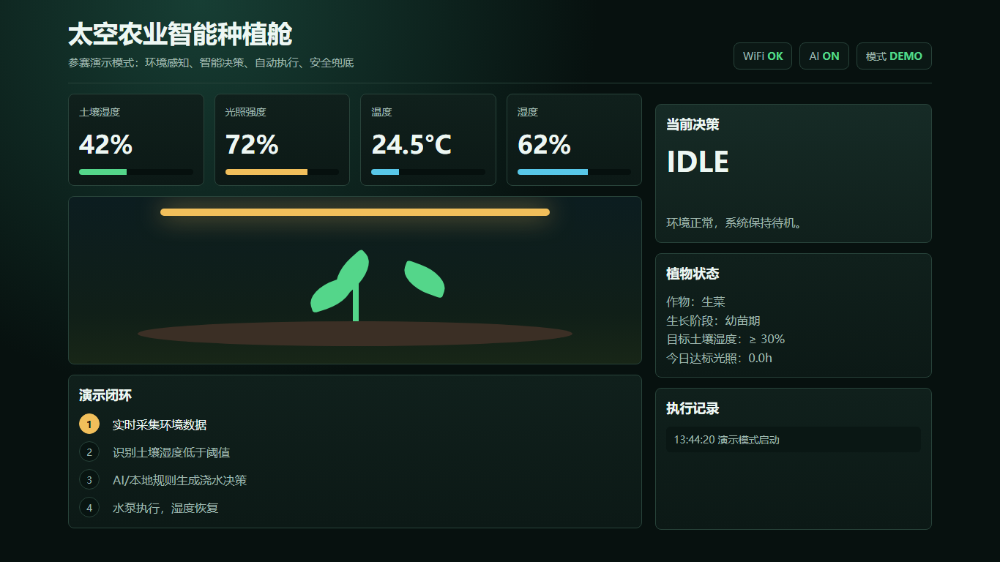
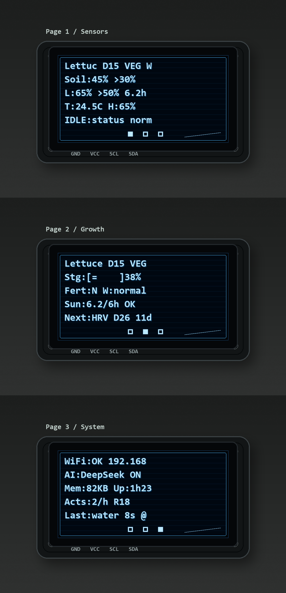

未来在轨育种验证平台的地面雏形
太空农业
智能种植舱
Space Agriculture Smart Planting Cabin
ESP32 舱内飞控 + 树莓派载荷计算机 + DeepSeek 云端决策
2035 年，我是一名太空育种站的作物育种师。过去，太空育种要把种子送上天，再带回地面种 5 到 8 代筛选。如果种植、观察和验证本身就发生在太空舱里，育种反馈会更快。这个项目，就是未来“在轨育种验证平台”的地面原型。
8种作物参数库
4类环境感知
2类物理执行
133自动化测试 PASS
系统架构 ESP32 负责活下去，树莓派负责更聪明
感知
SENSE
- 土壤湿度 ADC
- 环境光照 ADC
- DHT 温湿度
- 旋转编码器
决策
THINK
- 本地规则常驻
- 采纳 Pi advice
- 先过安全护栏
- 断联自动兜底
执行
ACT
- 12V 水泵
- 12V COB 补光
- WS2812 信号灯
- OLED 三页显示
安全
SAFE
- 动作时长上限
- 每小时限频
- 高低温保护
- 传感器降级
两层降级链：DeepSeek 精细判断 → ESP32 本地规则保命
UART
report / advice
report / advice
↔
JSON-over-Line
115200 baud
115200 baud
树莓派载荷计算机
- 接收 ESP32 report
- 调用 DeepSeek 生成 advice
- 转发 Web 地面站大屏
- AI / 网络失败时不下发 advice，ESP32 自动回到本地规则
五大核心亮点 面向太空育种的控制架构
1
深空自治架构
断网时不是停机，而是自动切回 ESP32 本地规则，模拟深空通信延迟下的舱内自治。
2
决策/执行分离
缺水、缺光、高温、缺肥等诊断信号全部广播；物理执行器只响应有硬件支撑的动作。
3
8 种作物库
生菜、小白菜、菠菜、韭菜、番茄、辣椒、黄瓜、茄子，切换后策略自动适配。
4
生长数据闭环
记录环境、阶段、动作、AI 观察，为“哪一株更值得留种”积累时间序列证据。
5
地面站遥测
Web 大屏展示 LIVE 状态、传感器仪表、动作链路、决策原因和育种观察。
现场可见证据 实机、OLED 和 Web 大屏同步展示


OLED 显示传感器、生长阶段和 Pi/UART 状态；Web 大屏显示实时遥测、动作链路、AI 原因和育种观察。
8 种作物参数库 叶菜 4 + 果菜 4
生菜苗期 / 生长期 / 采收期
控水促根，氮肥促叶
控水促根，氮肥促叶
小白菜苗期 / 生长期 / 采收期
保持湿润，快速采收
保持湿润，快速采收
菠菜苗期 / 生长期 / 采收期
忌积水，稳湿度
忌积水，稳湿度
韭菜苗期 / 生长期 / 收割后
割后追氮，持续再生
割后追氮，持续再生
番茄苗期 / 营养期 / 花期 / 果期
花期控水，果期补钾
花期控水，果期补钾
辣椒苗期 / 营养期 / 花期 / 果期
控水促花，防高温
控水促花，防高温
黄瓜苗期 / 营养期 / 花期 / 果期
果期水分连续
果期水分连续
茄子苗期 / 营养期 / 花期 / 果期
门茄坐住后追肥
门茄坐住后追肥
可验证数据 评委现场能追问的硬指标
60s默认采样周期
12每小时最多动作
20s单次执行上限
¥140单套硬件成本
WATER水泵物理动作
LIGHT补光物理动作
2035 太空育种站团队 项目关键词
张煦涵太空育种站长
陈美伊农业育种专家
杨灏辰总工程师